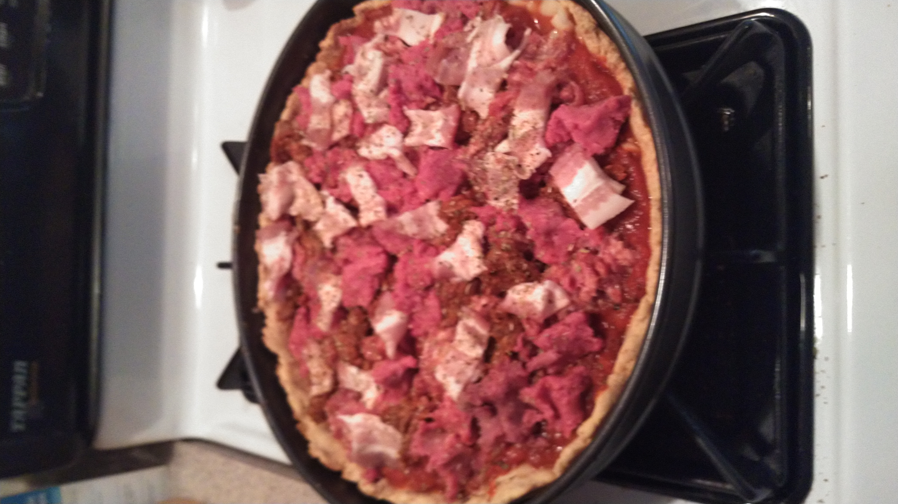

Home
Remember, good cooking is about Experimentation!
Law's Keto Safe Pizza

A low carbohydrate, high fiber, delicious alternative to store bought high carbohydrate pizza.
Ingredients
- #1 & 1/2 cups luke warm water.
- #4 tablespoons olive oil.
- #1 box King Arthur Keto Pizza Crust mix.
- 1/4 pound italian sausage.
- 1/4 pound chorizo, if desired.
- #1 grass-fed beef burger
- #1 & 1/2 small jars of pizza sauce.
- 1/2 lb. of your choice of cheese.
- Pizza seasoning.
Cooking Instructions
This makes about qty.8, 4"x 6" slices of pizza.
- Preheat the oven to 340 degrees.
- Begin with prepping the dough per the box instructions.
- Melt and spread butter on 11"x 17" baking sheet.
- Roll out dough evenly across sheet, coat hands w/ butter to ease the sticking.
- Add the pizza sauce to the top.
- Add the cheese.
- Add the meats, place as desired.
- Add the seasoning evenly across the pizza.
- Cook until cheese is golden brown about 35-40 minutes.
- Remove from oven and let stand 5-10 minutes.
- Cut into slices and enjoy!